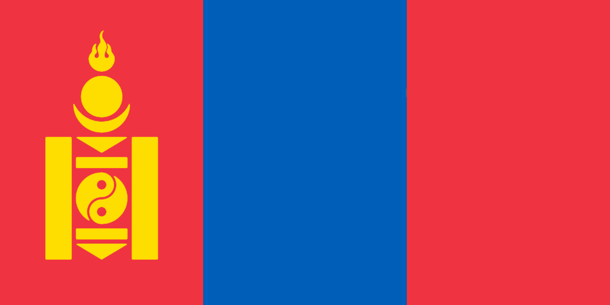

Mongoliska börsen
Tyvärr är den mongoliska börsen (MSE) i en knepig situation just nu. Den går bara ner och ner
vilket
förvärrar mongolernas vardag. Det traditionella instrumentet morin khuur blir allt dyrare och
folket
kan inte fortsätta med sin enda passion i livet - strupsång.
Men du kan göra något åt detta!
- Köp mongoliska aktier!
- Boka charter till Mongoliet!
- Hjälp Batzorig Vaanchig genom att kolla på hans videor!
Tillsammans räddar vi Mongoliet!

bild: Wikipedia